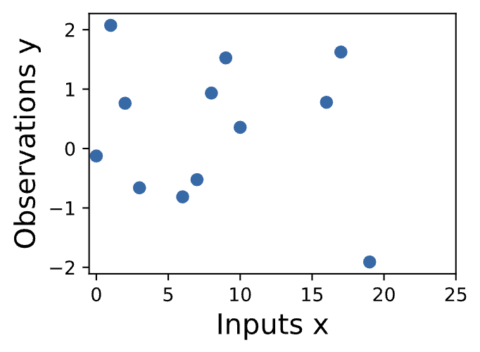
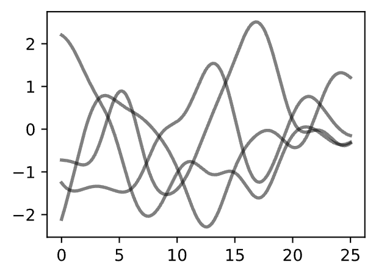

6.2 Gaussian Processes
Created Date: 2025-05-18
Gaussian processes (GPs) are ubitiquous. You have already encountered many examples of GPs without realizing it. Any model that is linear in its parameters with a Gaussian distribution over the parameters is a Gaussian process. This class spans discrete models, including random walks, and autoregressive processes, as well as continuous models, including Bayesian linear regression models, polynomials, Fourier series, radial basis functions, and even neural networks with an infinite number of hidden units. There is a running joke that "everything is a special case of a Gaussian process".
Learning about Gaussian processes is important for three reasons:
They provide a function space perspective of modelling, which makes understanding a variety of model classes, including deep neural networks, much more approachable;
They have an extraordinary range of applications where they are state-of-the-art, including active learning, hyperparameter learning, auto-ML, and spatiotemporal regression;
Iver the last few years, algorithmic advances have made Gaussian processes increasingly scalable and relevant, harmonizing with deep learning through frameworks such as GPyTorch (Gardner et al., 2018).
Indeed, GPs and and deep neural networks are not competing approaches, but highly complementary, and can be combined to great effect. These algorithmic advances are not just relevant to Gaussian processes, but provide a foundation in numerical methods that is broadly useful in deep learning.
In this chapter, we introduce Gaussian processes. In the introductory notebook, we start by reasoning intuitively about what Gaussian processes are and how they directly model functions. In the priors notebook, we focus on how to specify Gaussian process priors. We directly connect the tradiational weight-space approach to modelling to function space, which will help us reason about constructing and understanding machine learning models, including deep neural networks.
We then introduce popular covariance functions, also known as kernels, which control the generalization properties of a Gaussian process. A GP with a given kernel defines a prior over functions. In the inference notebook, we will show how to use data to infer a posterior, in order to make predictions. This notebook contains from-scratch code for making predictions with a Gaussian process, as well as an introduction to GPyTorch.
In upcoming notebooks, we will introduce the numerics behind Gaussian processes, which is useful for scaling Gaussian processes but also a powerful general foundation for deep learning, and advanced use-cases such as hyperparameter tuning in deep learning. Our examples will make use of GPyTorch, which makes Gaussian processes scale, and is closely integrated with deep learning functionality and PyTorch.
6.2.1 Introduction to GP
In many cases, machine learning amounts to estimating parameters from data. These parameters are often numerous and relatively uninterpretable — such as the weights of a neural network. Gaussian processes, by contrast, provide a mechanism for directly reasoning about the high-level properties of functions that could fit our data.
For example, we may have a sense of whether these functions are quickly varying, periodic, involve conditional independencies, or translation invariance. Gaussian processes enable us to easily incorporate these properties into our model, by directly specifying a Gaussian distribution over the function values that could fit our data.
Let’s get a feel for how Gaussian processes operate, by starting with some examples.
Suppose we observe the following dataset, of regression targets (outputs) \(y\), indexed by inputs \(x\). As an example, the targets could be changes in carbon dioxide concentrations, and the inputs could be the times at which these targets have been recorded.
What are some features of the data? How quickly does it seem to varying? Do we have data points collected at regular intervals, or are there missing inputs? How would you imagine filling in the missing regions, or forecasting up until \(x = 25\)?

In order to fit the data with a Gaussian process, we start by specifying a prior distribution over what types of functions we might believe to be reasonable. Here we show several sample functions from a Gaussian process. Does this prior look reasonable?
Note here we are not looking for functions that fit our dataset, but instead for specifying reasonable high-level properties of the solutions, such as how quickly they vary with inputs. Note that we will see code for reproducing all of the plots in this notebook, in the next notebooks on priors and inference.

Once we condition on data, we can use this prior to infer a posterior distribution over functions that could fit the data. Here we show sample posterior functions.
6.2.2 GP Priors
Understanding Gaussian processes (GPs) is important for reasoning about model construction and generalization, and for achieving state-of-the-art performance in a variety of applications, including active learning, and hyperparameter tuning in deep learning. GPs are everywhere, and it is in our interests to know what they are and how we can use them.
In this section, we introduce Gaussian process priors over functions. In the next notebook, we show how to use these priors to do posterior inference and make predictions. The next section can be viewed as “GPs in a nutshell”, quickly giving what you need to apply Gaussian processes in practice.
6.2.2.1 Definition
A Gaussian process is defined as a collection of random variables, any finite number of which have a joint Gaussian distribution. If a function \(f(x)\) is a Gaussian process, with mean function \(m(x)\) and covariance function or kernel \(k(x, x')\), \(f(x) ~ GP(m, k)\), then any collection of function values queried at any collection of input points \(x\) (times, spatial locations, image pixels, etc.), has a joint multivariate Gaussian distribution with mean vector \(u\) and covariance matrix \(K\):